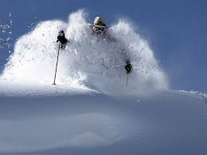

he term Champagne Powder snow was coined by Barney McClean in the 1950s and was adopted and trademarked by Steamboat Resort 2010 to describe the light, dry quality of the snow in Northwest Colorado. According to scientists from the Desert Research Institute, who operate a climate laboratory atop the resort's Storm Peak, there is a good scientific basis behind the name. The abundant snowfall is a result of Steamboat's location within the Park Range, which is the first significant barrier in the Northern Colorado Rockies to storms arriving from the Pacific Ocean. Although the moisture from these storms has been depleted after passing the Wasatch Range in Utah, the Park Range causes a so-called 'feeder' or orographic cloud to form. The orographic cloud is primarily filled with tiny super-cooled droplets, which cause the 'white-out' the locals call it being in the white room one sometimes experiences while on the mountain. It is this rare combination of feeder and seeder clouds that is responsible for the frequent occurrence of rimed crystals resulting in the formation of Steamboat's famous Champagne Powder snow. Less technically, it is observed as frozen fog, created in an arid, high elevation environment. The "fog-snow" that is created is unique in that it is the result of a temperature inversion where low humidity air at severe low temperature rises to warmer elevation. but still freezing temperature, and precipitates as snow. The snow crystals are extremely small and as a result, of the lowest density that approaches 14 inches of snow per inch of liquid water.
